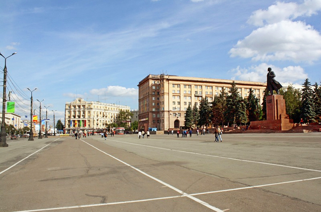

Площадь Революции
Все громкие массовые городские мероприятия проходят на Главной городской площади — площади Революции, вокруг которой разбит симпатичный сквер, освежающе журчит фонтан, удачно украшенный ажурным каслинским литьем. И свысока взирает на суету города выточенный в мраморе В. И. Ленин. Отлично вписывается в ансамбль здание театра драмы.
Википедия:Площадь Революции — архитектурный комплекс, главная и наиболее известная площадь Челябинска, расположенная в центре города и ограниченная улицами Воровского и Кирова с запада, Цвиллинга с востока, Тимирязева с юга и проспектом Ленина с севера. Хотя считается, что на юге от площади Революции, за улицей Тимирязева, располагается Театральная площадь, все здания на второй адресно принадлежат к первой.